See where it all went
Every refresh is saved. Klue draws what was left and what you used each day or hour, and works out the day you'll run out at this rate. Hover any point for the exact minute.
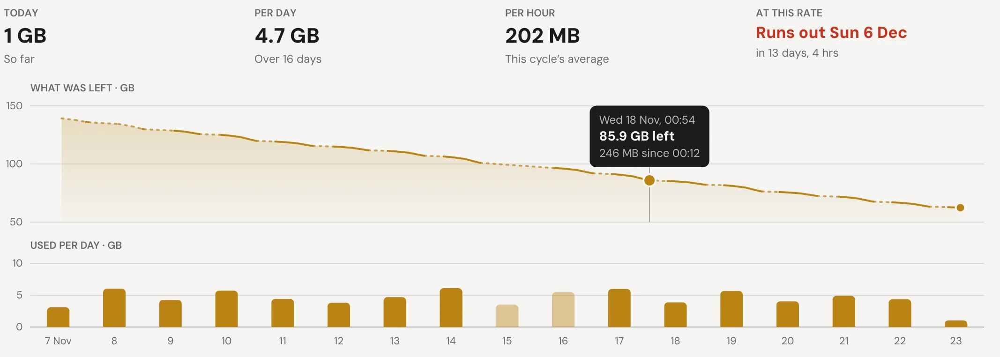
Klue keeps the quota, balance and renewal date of your WE, Vodafone and Orange lines in one window, draws what you use, and warns you before anything runs dry.
Windows, macOS and Linux · No account needed
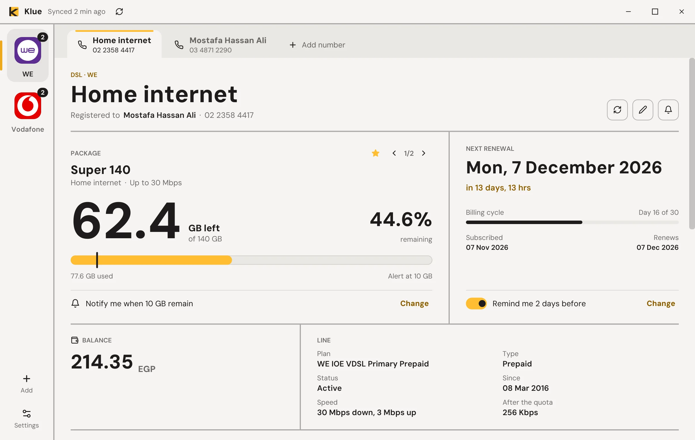
No more hopping between carrier apps and websites. Add a number once with the password you already use, and Klue keeps an eye on it.
Every refresh is saved. Klue draws what was left and what you used each day or hour, and works out the day you'll run out at this rate. Hover any point for the exact minute.

Low-quota warnings and renewal reminders, with sound. If your laptop was asleep, they're waiting when it wakes.
A fully mirrored right-to-left layout, using the carriers' own Arabic names for packages and plans.
Light, Dark, or Match, which wears your carrier's colours.
Every number in a quick view from the tray. Klue can start with your computer, too.
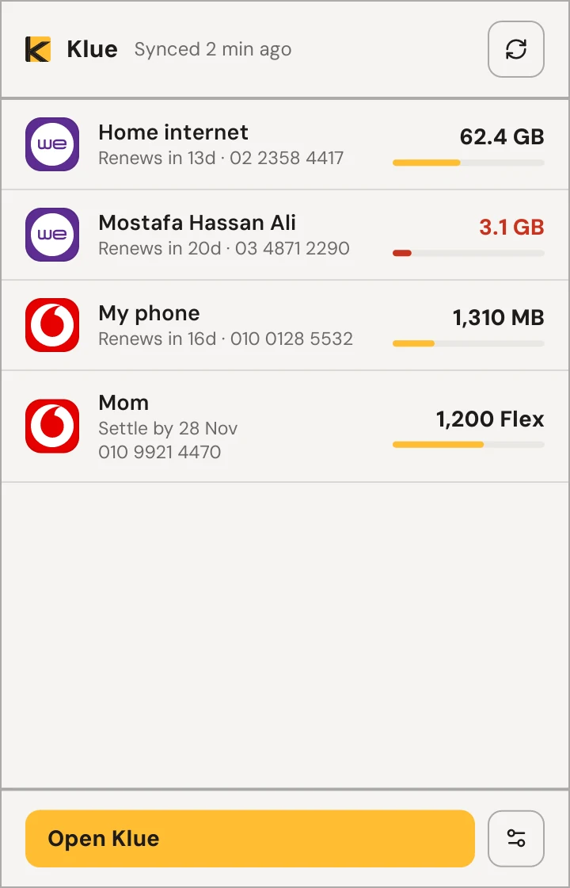
They live in your system's keychain and are only ever sent to your carrier. No Klue account, no Klue server, no tracking.
we:0223584417Written in Rust and drawn on the CPU. There's no browser hiding inside, so it stays small and starts fast.
New versions show up on launch with what's changed, and install in one click.
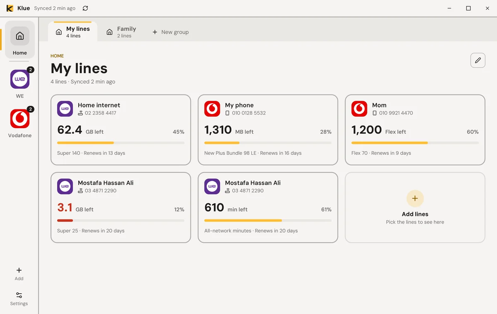
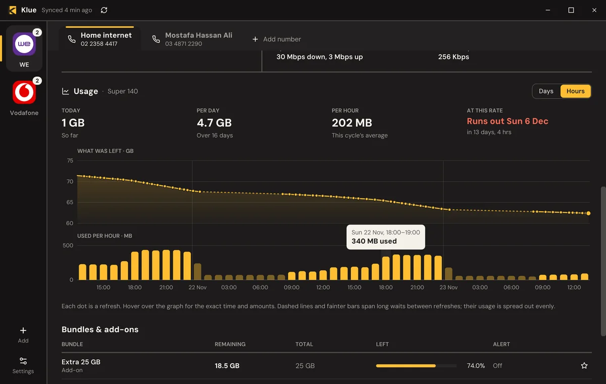
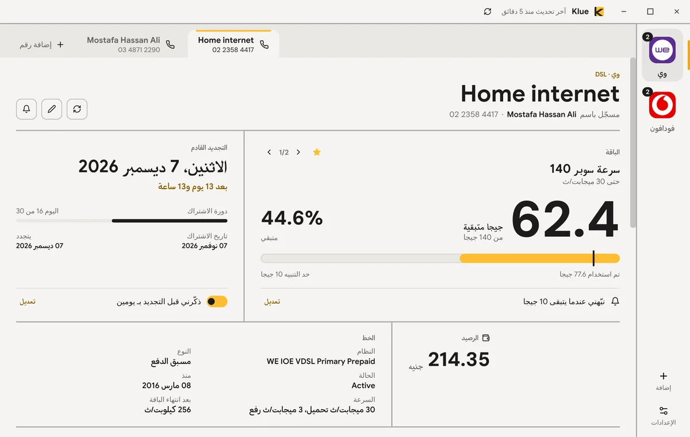
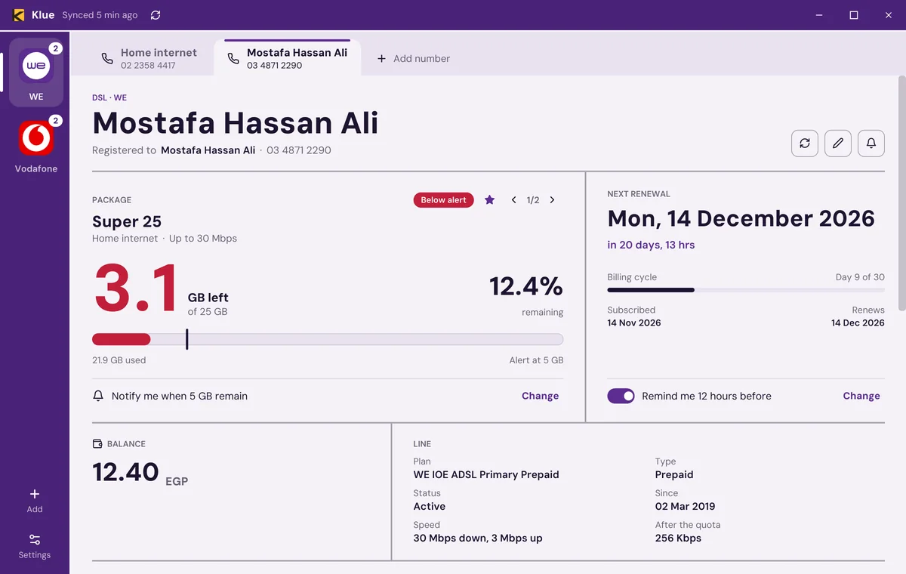
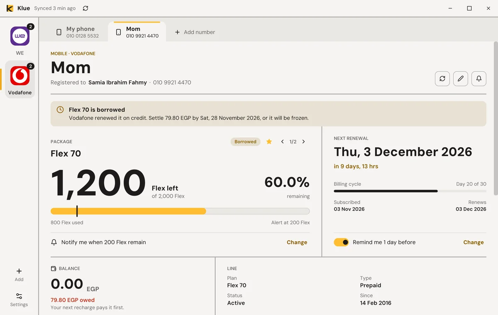
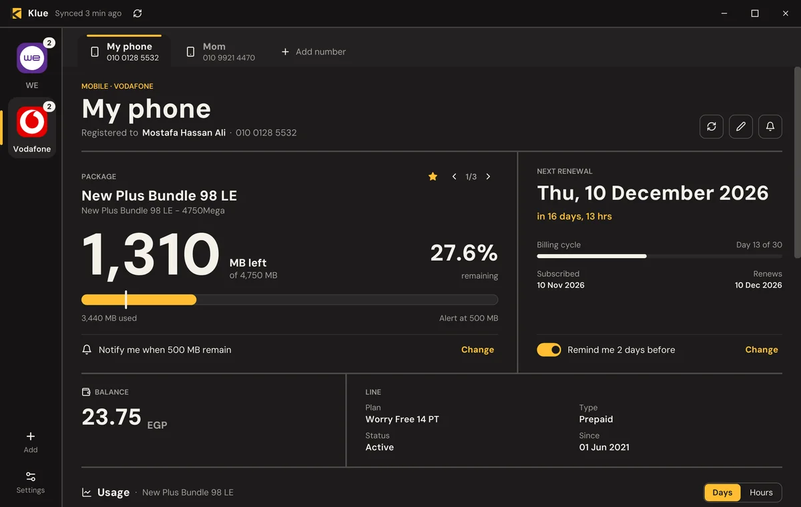
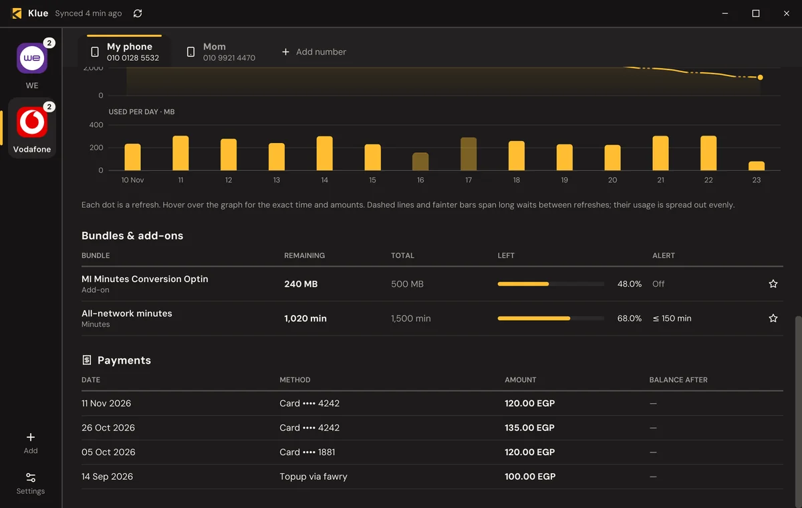
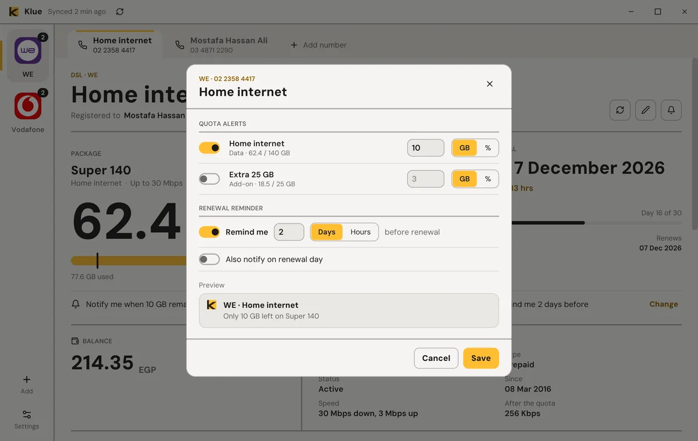
WE home internet, landlines and WE Mobile, Vodafone mobile, and Orange mobile and home internet today, with more line types on the way.
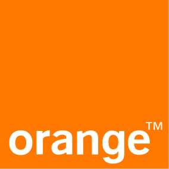
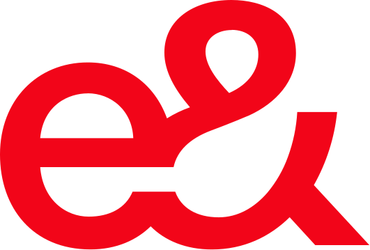
Klue Server is a Docker container you run on your own VPS. It checks your lines 24/7, even with your computer off, and the desktop app links to it with a key.
One container, your server. Pair it with the app using its key and it picks up your numbers.
$ docker run -d -v klue:/data \ ghcr.io/karimawi/klue-server ✓ Klue Server is running Link key: KLUE-7F3A-29QX
Ask for your balance from anywhere, and get your alerts right in your chats.
Home-screen widgets for iPhone and Android, set up through Scriptable and similar apps.
No. Klue is an independent, unofficial app. It signs in the way the carriers' own websites and apps do, with the same password you already use there.
Into your system's credential store: Windows Credential Manager, the macOS Keychain, or Secret Service on Linux. They're only ever sent to your carrier, to sign in. There's no Klue account and no Klue server in between.
Yes. Klue is free and open source under the GPL-3.0, and all of its code is on GitHub.
The builds aren't code-signed yet. On Windows, choose More info, then Run anyway. On macOS, open Klue once, then click Open Anyway in System Settings → Privacy & Security.
The carriers don't offer these sign-ins to apps like Klue, so they could change or block them at any time. Klue goes easy on sign-ins, but use it at your own risk.
Windows 10 or 11 (64-bit), macOS 11 or later on Apple Silicon or Intel, or a 64-bit Linux desktop: a .deb for Ubuntu and Debian, a tarball for the rest.
Free for Windows, macOS and Linux · v0.5.0 beta
The builds aren't code-signed yet, so your system will ask you to confirm the first time. All releases